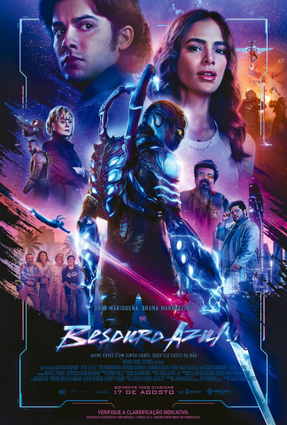

Sobre
Besouro Azul
Gênero: Ação, Aventura/Ficção Cientifica
Direção: Angel Manuel Soto
Escrito por: Gareth Dunnet Alcocer
Duração: 2h 07min
Elenco: Bruna Marquezine (Jenny Kord), Xolo Mariduena (Jaime Reyes), Susan Sarandon (Victoria Kord), Raoul Max Trujillo (Conrad Carapax), Harvey Guillén (Dr.Victor Alvarez)
Classificação

Sinopse
O filme segue a história de Jaime Reyes, um jovem mexicano-americano que, após encontrar um escaravelho alienígena, ganha superpoderes e se torna o Besouro Azul. Jaime deve usar seus novos poderes para proteger sua cidade natal de uma ameaça alienígena.